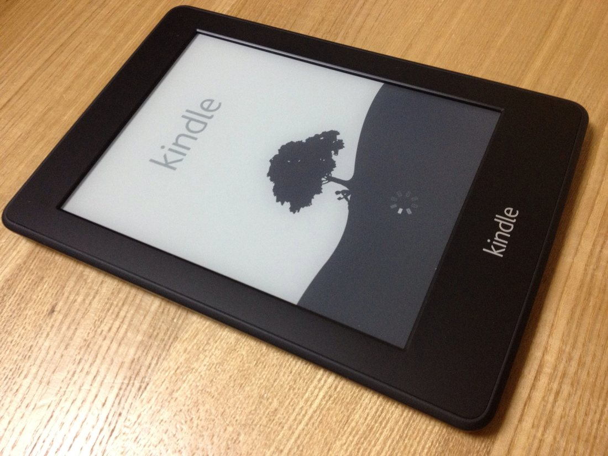

The Autopsy Report · Device #079
The Kindle Paperwhite (1st generation, 2012)
Amazon put a light inside the E Ink reader — and the public teardown record never got past the bezel.
What is this thing?
The first-generation Kindle Paperwhite is Amazon's 2012 E Ink reader, released October 1, 2012 at $119 for the Wi-Fi model. Wikipedia Its defining feature was the built-in front light: a row of LEDs firing across a light-guide layer so the E Ink page glows in the dark — no clip-on lamp required.
This is the thinnest report in this batch, and we say that up front. The public teardown record for the Paperwhite is a single video teardown that never analyzed the board's components — so the chip table below is mostly honest unknowns. That is the finding: some devices simply haven't been documented at board level in public.
Not yet on our bench
This device is not on our bench. We don't own one, we haven't opened one, and we haven't powered one on. Everything on this page comes from public records: government filings, published teardowns by repair shops and journalists, and manufacturer documents. That's a legitimate way to learn a device's story — and it's also a limited one. There are no BareBoard photos, measurements, boot logs, or firmware notes here, because we haven't earned them yet.
When a unit of the Paperwhite does reach our bench, this page gets a second edition: our own board photography, our own measurements, and whatever the device tells us when it wakes up. Until then, what follows is the public record, carefully sourced, with the gaps labeled as gaps.
A short history
- September 5, 2012The FCC grants equipment authorization under ID A8Y-1496 — registered to Gluteen LLC, another Amazon shell filer. FCC filing
- September 6, 2012Amazon announces the Paperwhite alongside the Kindle Fire HD. Wikipedia
- October 1, 2012The Paperwhite goes on sale at $119 (Wi-Fi). Wikipedia
- October 7, 2012PowerBook Medic's video teardown appears — screws out, glued bezel off — but with no component-level analysis. Engadget
- March 4, 2013The FCC filing's internal photos, external photos, and manuals become public. FCC filing
The outside
A 6-inch E Ink display with a built-in front light, in a matte black plastic body barely thicker than a pencil. Wikipedia No buttons on the face — just the screen; power and USB live on the bottom edge.
The photo below shows the Paperwhite's glowing page — the front light doing the thing it was built for.

The board
Engadget's report on the PowerBook Medic video teardown confirms the construction: screws hold the back on, the bezel is glued down, and the E Ink panel sits over the main board — but the video never identifies a single board-level chip. Engadget
The FCC's internal photos (public since March 2013) show the board and the front-light assembly, but the filing's schematics, block diagram, and operational description were never made public. FCC filing We have not photographed the board ourselves — and neither, in any useful detail, has anyone else in public.
Under the microscope: the chips
What's on the board, what each part does, and how sure we are — all from public teardown records, since we haven't seen the board ourselves. Likely means the public hardware record agrees on it. Confirmed is reserved for primary sources we could verify directly, like the government's own filing. Every row links somewhere you can read more.
| Chip | What it does | How we know | Dig deeper |
|---|---|---|---|
| Main processor | Runs the reader software. | Unknown Not identified in any public teardown or filing we could find. We don't guess. | Engadget teardown (names no chips) |
| RAM | Working memory. | Unknown Not identified in any public teardown or filing we could find. We don't guess. | Engadget teardown (names no chips) |
| Flash storage | Holds books and the OS (2 GB on this model). | Unknown Not identified in any public teardown or filing we could find. We don't guess. | Engadget teardown (names no chips) |
| 6-inch E Ink panel with front-light guide |
The display — E Ink with a built-in LED light layer. | Likely The product’s defining feature; the teardown video shows the panel and light assembly. | Engadget |
| Wi-Fi radio | Whispernet book downloads. | Confirmed The FCC filing authorizes a Wi-Fi transmitter at ~107 mW. | FCC filing |
We considered the Kindle Touch's documented parts and set them aside: substituting one Kindle's chips for another's is exactly how bad hardware writing happens. When the bench gets a Paperwhite, this table gets filled in properly.
The government's file on this device
The Paperwhite went through the FCC as A8Y-1496. The historical applicant is Gluteen LLC — the shell name again — though the modern index attributes the registration to Amazon.com Services. FCC filing Confirmed — straight from the filing index.
The grant is dated September 5, 2012; internal photos, external photos, and manuals became public on March 4, 2013. The filing lists Wi-Fi at about 106.9 mW. FCC filing The block diagram, schematics, and operational description show no public availability date — they stayed confidential.
Debug and service modes
Public reader-community discussion documents a ;dm diagnostic command on this Kindle generation: typed into the search bar, it generates diagnostic log documents on the device. It creates logs — it is not a shell, not a bypass, and not a way in. MobileRead forums Likely — secondary source, community-documented, treated as described behavior rather than verified fact.
We have not run this command on any Paperwhite. It is listed because the community documented it — not because we've used it.
Our posture on all of the above: we describe what's publicly documented, and we don't go knocking. No device has been probed, reflashed, or opened on our bench — there is nothing here but reading.
What public records show
The board-level record is empty, and that's the story. A popular device, a video teardown within a week of launch — and still no public chip list fourteen years later. Teardowns are not automatic; somebody has to do the tedious identification work, and for the Paperwhite nobody did. Engadget
The shell-filer pattern holds. Gluteen LLC on the application, Amazon.com Services in the modern index — the third Amazon device in this batch filed the same way. FCC filing
What we haven't done
- We have not opened a 2012 Paperwhite, photographed its board, or measured anything on it.
- We have not identified the SoC, RAM, or storage chips — the public record doesn't name them.
- We have not run the ;dm diagnostic command or examined any diagnostic output.
- We have not substituted Kindle Touch parts for Paperwhite parts — and we won't.
By the numbers
- Model: Kindle Paperwhite (1st generation, 2012) Wikipedia
- FCC ID: A8Y-1496 (filed as Gluteen LLC) FCC filing
- Display: 6 in E Ink with built-in front light Wikipedia
- Storage: 2 GB Wikipedia
- Released: October 1, 2012, $119 (Wi-Fi) Wikipedia
- Wireless: Wi-Fi b/g/n (~107 mW per FCC filing) FCC filing
- Board-level chip IDs in public records: none Engadget teardown (names no chips)
Words to know
Every term this page uses, in plain English. No prior knowledge required.
- E Ink
- The paper-like display tech in e-readers: tiny capsules of black and white pigment that hold an image with no power.
- Front light
- LEDs firing sideways across a light-guide layer above the E Ink — the page glows without backlighting it like an LCD.
- Diagnostic log
- A file the device writes about its own operation. The ;dm command generates these; reading them is not hacking.
- FCC ID
- The ID the FCC assigns to each approved wireless product. Punch it into fccid.io and the whole public filing comes up.
- Shell company filing
- Amazon's practice of filing FCC hardware under names like Gluteen LLC instead of “Amazon” — the grantee history still tells the story.
Sources & confidence
- Teardown construction (screws, glued bezel, no component analysis): Engadget's October 2012 report on the PowerBook Medic video teardown.
- FCC ID, applicant history, grant date, confidentiality dates, and transmit power: the FCC filing index for A8Y-1496 — a primary source. High confidence.
- The ;dm diagnostic command: public reader-community discussion on MobileRead — secondary, described as documented behavior, not verified by us.
- Release date and price: the device's encyclopedia entry, cross-checked against launch coverage.
- The empty chip table is a finding, not an oversight: no public source names the Paperwhite's board-level chips, and we don't invent them.
- Anything not listed here is unknown until the bench says otherwise. We'll say so, out loud, when that's the case.
Legal note. BareBoard is an educational project. Everything on this page is assembled from public records and freely-licensed photography credited in its caption. We don’t publish, host, or distribute firmware, keys, passwords, or credentials. Product names and trademarks belong to their respective owners and appear here only to identify the hardware. If you believe anything here infringes your rights, contact us and we’ll address it promptly.